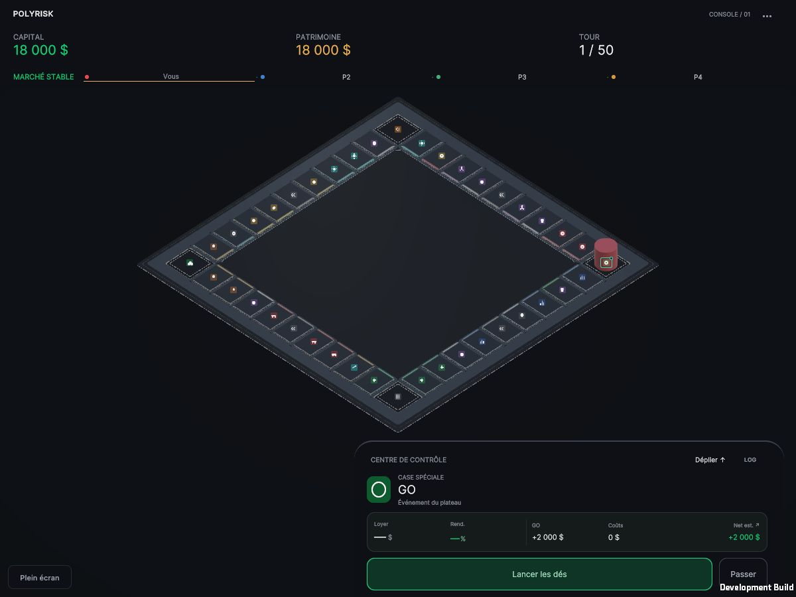
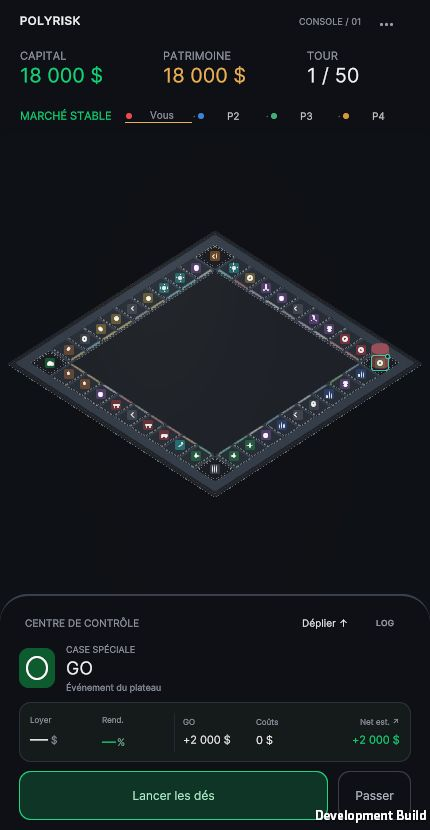
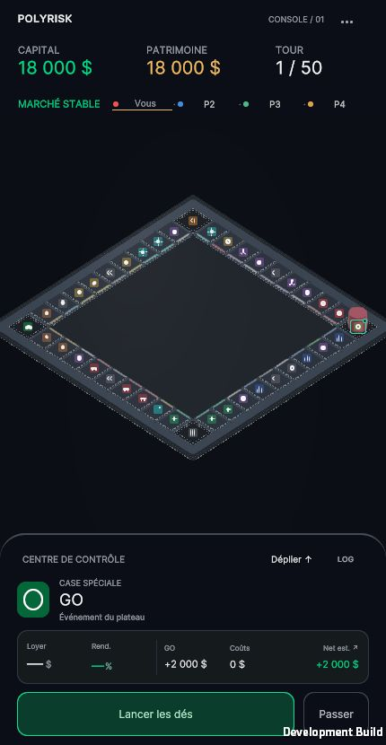
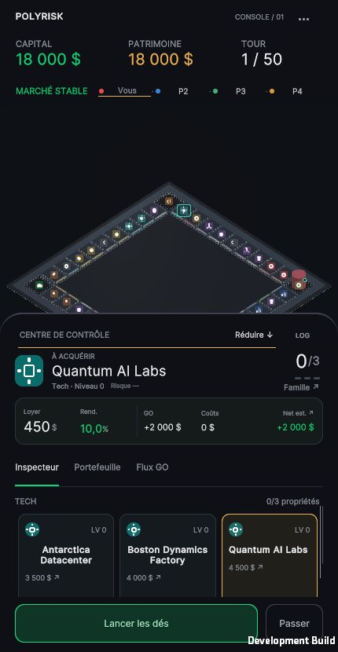
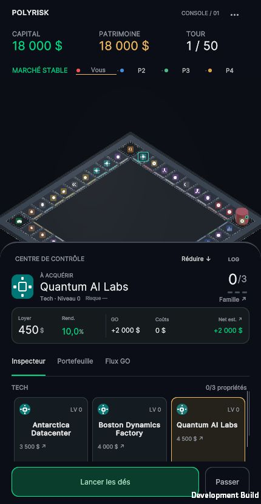

Captures réelles. Géométrie, matériaux et angle 40°/45° inchangés. PASS 2D cadre les 40 cases et le volume des pions, en acceptant le recadrage du socle extérieur. Les fiches inspectées peuvent différer. Le suivi et les dés se jugent dans les vidéos.




